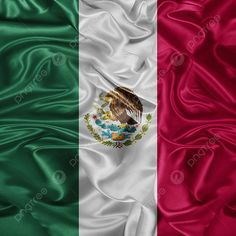

El mes patrio rinde homenaje a los líderes, estrategas y conspiradores que impulsaron y consumaron la Independencia de México, así como a los defensores de la soberanía nacional. Miguel Hidalgo y Costilla: Conocido como el "Padre de la Patria". Encabezó el levantamiento armado la madrugada del 16 de septiembre de 1810 con el Grito de Dolores, convocando al pueblo a rebelarse contra el dominio español. José María Morelos y Pavón: Principal líder militar y político tras la muerte de Hidalgo. Autor de *Sentimientos de la Nación* y organizador del Congreso de Anáhuac. Su natalicio se celebra el 30 de septiembre. Josefa Ortiz de Domínguez ("La Corregidora"):** Pieza clave de la Conspiración de Querétaro. Al ser descubierta la trama independentista, logró enviar un aviso oportuno a Allende e Hidalgo para adelantar el inicio de la insurrección. Ignacio Allende: Capitán del ejército realista que se sumó a la causa insurgente. Fue el estratega militar principal en los primeros meses de la lucha junto a Miguel Hidalgo. Vicente Guerrero: Líder insurgente que sostuvo la resistencia armada en las montañas del sur durante los años más difíciles del conflicto. Famoso por su frase "La patria es primero", pactó el fin de la guerra mediante el Abrazo de Acatempan. Agustín de Iturbide: Comandante militar que unificó a los ejércitos realista e insurgente bajo el Ejército Trigarante. Encabezó la entrada triunfal a la Ciudad de México el 27 de septiembre de 1821, consumando la Independencia. Los Niños Héroes: Los seis cadetes del Colegio Militar (Juan de la Barrera, Juan Escutia, Agustín Melgar, Fernando Montes de Oca, Vicente Suárez y Francisco Márquez) recordados por su defensa del Castillo de Chapultepec el 13 de septiembre de 1847 frente a las tropas estadounidenses.

NOMBRE : LOZANO LINARES MARCO ANTONIO
NO.CONTROL : 0587
SEMESTRE: 4TO SEMESTRE | GRUPO : 4*I
ESPECIALIDAD : PROGRAMACION